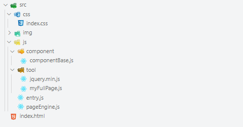

一、项目介绍
- 该项目是我们自己封装fullPage插件，然后用自己写的fullPage插件制作一个单页面全屏滚动网页
二、在编写fullPage之前我们先将模板做好，便于我们编写
<!-- 模板 --> |
html,body{ |
如果想横屏切换slide那么需要给slide添加一个父元素，让父元素带动slide切换，在用户使用时，我们不需要让用户添加父元素，所以我们应该在插件内部用js添加
css也需要我们在插件内部用jQuery添加，用户引入fullPage文件，然后直接使用即可
三、fullPage基本功能实现
// fullPage.js |
3.1 概述
fullPage插件实际上就是用$.fn.extend给jQuery添加一个实例方法，项目运行之后每个jQuery对象都有这个方法，我们直接用jQuery对象调用即可
调用函数时我们可以将所有配置写成一个config对象，config作为参数传入
3.2 插件编写流程
3.2.1 先将this保存为变量，this即wrapper元素
$(this)是一个jQuery对象，如果每次用$(this)，那么每次都会执行$()函数，那么每次都会返回一个jQuery对象，由于对象是引用值，所以即使这些对象内容是相同的，但是地址不相同，所以每个$(this)是不同的，然后我们只需要使用一个$(this)就行，这样很耗费性能
所以我们可以将一个$(this)赋值给一个变量$w，每次使用$w实际上使用的是同一个$(this)
3.2.2 将常用值保存为变量，既节省性能又减少代码的冗余，包括section元素及背景颜色、窗口边框盒宽高，和插件固定样式中的重复样式
- .outerHeight(),outerWidth()用来计算元素宽高，包括margin border
3.2.3 初始化样式：初始化样式根据一中的css模板编写
给html、body、wrapper、section添加共同样式commonStyle，同时给body添加单独样式
给wrapper、section、slide添加单独样式，并且给每一个section下面的slide添加一个父元素，父元素带动slide实现横向移动
设置slideWrapper宽高，该宽高是用之前窗口的宽高计算得出的
3.2.4 类名初始化
- 用active标记当前显示的section，用innerActive标记slide
初始化为第一个section
初始化为html内每一个的sliderWrapper的第一个slide
- .end():此处.end()是返回$sec并对$sec继续进行其他的操作，而不是返回$sec.eq(0)
3.2.5 给document绑定键盘事件
根据which判断按键：left 37 top 38 right 39 bottom 40
- 垂直运动
先加锁,只要触发事件，就就先判断锁开没开，如果锁没开，就证明现在页面正在运动
计算wrapper相对于文档顶部的距离newTop,初值为0
声明direction变量，用于后面animate回调函数中判断页面移动方向，进而移除上一个section的active
全局声明curIndex变量，用来确定当前section的索引
如果curIndex为0，那么敲击上键，页面不会移动，同理如果curIndex为$sec.size()-1,证明此时页面显示的是最后一个section，敲几下建，页面不能继续向下移动，此处用if else if控制
条件判断内部，更新direction、curIndex、newTop
newTop更新之后，用animate让wrapper运动，wrapper的top值为newTop，在animate回调函数中更新active以及innerActive
- 水平移动(与垂直运动类似)
水平运动应该先计算出之前设置innerActive的slide元素的index值作为innerActiveIndex,因为有有innerActive的slide元素是展示给用户的，那么我们水平移动时，应该以有innerActive的元素的元素为基础进行移动
不能直接在全局声明一个innerActiveIndex，这样做有风险，比如如果全局声明innerActiveIndex=0，但是初始时innerActive加在了每个slideWrapper下的第二个slide元素上，就会导致前后不匹配
3.2.6 添加回调函数onLeave onLoad
当离开当前页面时，触发onLeave
当进入当前页面时，触发onLoad
四、标准项目目录

五、插件使用
<!-- 模板 --> |
// entry.js |
我们首先考虑用JS代码生成section的内容(此时不考虑slide)，内容用component元素包裹
我们用构造函数ComponentFactory来创建component
当页面垂直运动时，会自动触发onLeave onLoad函数，在onLeave onLoad函数中触发当前section的_leave _load事件，在_leave _load事件中触发component上绑定cpLeave cpLoad事件
- 这么做的好处就是不同的component的cpLeave cpLoad可以写不同的内容用来对当前的component做出不同的处理，程序更加灵活
六、完善ComponentFactory函数
// 模板 |
// componentBase.js |
// entry.js |
- 用上述方法时，创建component与给section添加component时不够灵活，如果内容很多会导致代码冗余
如果我们想要在不同的section下添加不用的component，那么就需要声明多个ComponentFactory，每个ComponentFactory都创建一个component元素
因为component不同，所以不能用循环的方式统一给section添加component，只能单独找出section添加component
所以我们将该函数抽离成一个单独的文件componentBase.js，该文件中先生成一个基础的div元素，至于这个div元素用户想要写成什么样子，直接通过参数config设置即可，既定制元素
七、编写页面引擎
<div class="wrapper"></div> |
// pageEngine.js |
经过步骤六，我们解决了ComponentFactory创建不同的元素需要声明多次的问题，但是我们如何随心所欲的将component加入到section slide中呢 ？这就是页面引擎要解决的问题
页面引擎的编写体现的jQuery的精髓，链式调用
八、在入口文件entry.js中使用页面引擎
// entry.js |